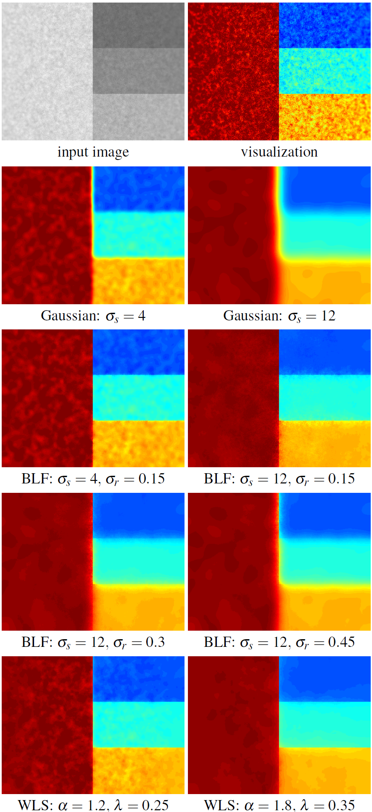

作者认为，虽然 BLF 在平滑强度的微小变化同时保留强边缘方面非常有效，但它实现渐进粗化的能力相当有限。如下图所示，左上角是合成示例，拥有几个不同步长幅度的边缘，并且包含两个不同尺度的噪声。

WLS将图像分解为基底层（大尺度强度变化）和细节层（小尺度细节），进而提出了一种基于加权最小二乘法（Weighted Least Squares, WLS）的新方法。 * WLS方法将图像平滑过程转化为一个最小化能量函数的数学问题。该函数包含两个目标： - 保真度（Fidelity）：平滑后的图像 u要尽量接近原始图像 g。 - 平滑度（Smoothness）：图像 u要尽量平滑，但在原始图像的强边缘处允许不连续。 * 能量函数： $$E(u)=p∑((up−gp)2+λ(ax,p(g)(∂x∂u)p2+ay,p(g)(∂y∂u)p2))$$ - up,gp：像素 p在平滑后图像和原始图像中的值。 - λ：平滑系数。λ越大，图像越平滑。 - ax,p(g),ay,p(g)：权重函数。这是实现“保边”的关键，它根据原始图像 g的梯度动态调整平滑力度。 * 权重函数（Edge-Aware Weights）权重函数的设计决定了算法是“无脑模糊”还是“智能保边”。文章采用如下定义： $$ax,p(g)=(∂x∂ℓ(p)α+ϵ)−1$$ - ℓ：原始图像的对数亮度（log-luminance）。 - α：敏感度参数（通常取1.2-2.0）。α越大，对边缘越敏感，越不容易模糊。 - ϵ：极小常数（如0.0001），防止分母为零。 * 逻辑解释 - 在平坦区域：梯度 ∂x∂ℓ很小，权重 a很大，此时算法会大力平滑（即允许模糊）。 - 在边缘处：梯度很大，权重 a很小，此时算法会限制平滑，从而保留边缘。 * 求解方法：线性系统。将上述能量函数最小化，最终转化为求解一个大型稀疏线性系统 $$(I+λLg)u=g$$ - I：单位矩阵。 - Lg：由权重 a构造的拉普拉斯矩阵。 - g：原始图像向量。 由于矩阵 (I+λLg)是稀疏且对称正定的，文章建议使用预条件共轭梯度法（Preconditioned Conjugate Gradient）来高效求解。 * 多尺度分解，为了提取不同尺度的细节，文章提出两种构建多尺度金字塔的方法： - 直接法：直接对原始图像 g应用不同 λ的WLS滤波，得到不同尺度的平滑结果 ui。细节层 di=ui−1−ui。 - 迭代法：对上一层的平滑结果 ui再次应用WLS滤波。这种方法更倾向于产生分片常数（piecewise constant）的结果，适合图像抽象化（Abstraction）应用。
import cv2
import numpy as np
import scipy.sparse as sparse
import scipy.sparse.linalg as sl
import matplotlib.pyplot as plt
# ----------------- WLS Filter Implementation -----------------
def process_difference_operator(difference_operator, lambda_, alpha, epsilon):
"""
Apply non-linear mapping to the difference operator to compute weights.
"""
difference_operator = -lambda_ / (epsilon + (np.absolute(difference_operator)**alpha))
return difference_operator
def wls_filter(L, lambda_=0.35, alpha=1.2, epsilon=1e-4):
"""
Weighted Least Squares (WLS) Filter
Based on: "Edge-Preserving Decompositions for Multi-Scale Tone and Detail Manipulation" (Farbman et al., 2008)
Args:
L: Input luminance image (2D numpy array), values should be normalized to [0, 1] or similar scale.
lambda_: Balance between data fidelity and smoothness. Larger lambda = more smoothing.
alpha: Controls the sensitivity to edges.
epsilon: Small constant to avoid division by zero.
Returns:
x: Smoothed image (same shape as L)
"""
# Get log-luminance for weight calculation (perceptual based edge detection)
L_log = np.log(L.astype(np.float64) + 1e-10)
# Compute the forward and backward differences of the luminance channel
# dx_forward: L(x+1) - L(x)
dx_forward = L_log - cv2.copyMakeBorder(L_log[:, 1:], top=0, bottom=0, left=0, right=1,borderType=cv2.BORDER_REPLICATE)
# dx_backward: L(x-1) - L(x)
dx_backward = L_log - cv2.copyMakeBorder(L_log[:, :-1], top=0, bottom=0, left=1, right=0,borderType=cv2.BORDER_REPLICATE)
# dy_forward: L(y+1) - L(y)
dy_forward = L_log - cv2.copyMakeBorder(L_log[1:, :], top=0, bottom=1, left=0, right=0,borderType=cv2.BORDER_REPLICATE)
# dy_backward: L(y-1) - L(y)
dy_backward = L_log - cv2.copyMakeBorder(L_log[:-1, :], top=1, bottom=0, left=0, right=0,borderType=cv2.BORDER_REPLICATE)
# Weight each derivative (compute smoothness weights)
dx_forward_weighted = process_difference_operator(dx_forward, lambda_, alpha, epsilon)
dx_forward_weighted[:, -1] = 0
dx_backward_weighted = process_difference_operator(dx_backward, lambda_, alpha, epsilon)
dx_backward_weighted[:, 0] = 0
dy_forward_weighted = process_difference_operator(dy_forward, lambda_, alpha, epsilon)
dy_forward_weighted[-1, :] = 0
dy_backward_weighted = process_difference_operator(dy_backward, lambda_, alpha, epsilon)
dy_backward_weighted[0, :] = 0
# Calculate the diagonal (central) element
# A_ii = 1 - sum(weights connected to i)
# But here weights are negative (see process_difference_operator: -lambda / ...),
# so we subtract them to make A_ii = 1 + sum(|weights|) if we view it as Laplacian matrix
# The code does: 1 - (sum of negative weights) = 1 + sum(positive weights)
central_element = np.ones_like(dx_forward) - (dx_forward_weighted + dx_backward_weighted + dy_forward_weighted + dy_backward_weighted)
# Form sparse matrix
N = L.size
C = L.shape[1]
row = np.zeros(5 * N)
col = np.zeros_like(row)
data = np.zeros_like(row)
# Central element
row[:N] = np.arange(N)
col[:N] = row[:N]
data[:N] = central_element.ravel()
# dx_forward (neighbor at x+1, index i+1)
row[N:2*N] = np.arange(N)
col[N:2*N] = row[N:2*N] + 1
data[N:2*N] = dx_forward_weighted.ravel()
# dx_backward (neighbor at x-1, index i-1)
row[2*N:3*N] = np.arange(N)
col[2*N:3*N] = row[2*N:3*N] - 1
data[2*N:3*N] = dx_backward_weighted.ravel()
# dy_forward (neighbor at y+1, index i+C)
row[3*N:4*N] = np.arange(N)
col[3*N:4*N] = row[3*N:4*N] + C
data[3*N:4*N] = dy_forward_weighted.ravel()
# dy_backward (neighbor at y-1, index i-C)
row[4*N:5*N] = np.arange(N)
col[4*N:5*N] = row[4*N:5*N] - C
data[4*N:5*N] = dy_backward_weighted.ravel()
# Prevent out-of-bounds indices.
# Setting invalid indices to 0 ensures they don't affect the matrix structure wrongly.
# However, since we used copyMakeBorder and set boundary weights to 0,
# the values at boundary connections should already be 0.
# But col indices might be out of range (e.g. -1 or N).
valid_mask = (col >= 0) & (col < N)
# Filter valid entries
row = row[valid_mask]
col = col[valid_mask]
data = data[valid_mask]
# Construct sparse matrix A
A = sparse.coo_matrix((data, (row, col)), shape=(N, N)).tocsr()
b = L.ravel()
# Solve linear system Ax = b
# Use Conjugate Gradient method for symmetric positive definite matrix
x, info = sl.cg(A=A, b=b)
if info != 0:
print(f"Warning: CG did not converge (info={info})")
x = x.reshape(L.shape)
return x
# ----------------- Testing Code -----------------
if __name__ == '__main__':
from skimage import data, img_as_float
# Load test image
image = data.astronaut()
# Convert to grayscale for WLS filter (which operates on luminance)
# Alternatively, you can apply it to V channel in HSV or Y in YCbCr
gray_image = cv2.cvtColor(image, cv2.COLOR_RGB2GRAY)
gray_image = img_as_float(gray_image)
# Apply WLS Filter
# lambda_ controls smoothing amount (0.1 is subtle, 1.0 is strong)
lambda_val = 1.0
alpha_val = 1.2
smoothed = wls_filter(gray_image, lambda_=lambda_val, alpha=alpha_val)
# Enhance detail: Original + (Original - Smoothed) * gain
detail_layer = gray_image - smoothed
enhanced = gray_image + 2.0 * detail_layer
enhanced = np.clip(enhanced, 0, 1)
# Visualization
plt.figure(figsize=(15, 5))
plt.subplot(1, 3, 1)
plt.imshow(gray_image, cmap='gray')
plt.title('Original (Grayscale)')
plt.axis('off')
plt.subplot(1, 3, 2)
plt.imshow(smoothed, cmap='gray')
plt.title(f'WLS Smoothed (lambda={lambda_val})')
plt.axis('off')
plt.subplot(1, 3, 3)
plt.imshow(enhanced, cmap='gray')
plt.title('Detail Enhanced (Original + 2*Detail)')
plt.axis('off')
plt.tight_layout()
plt.show()